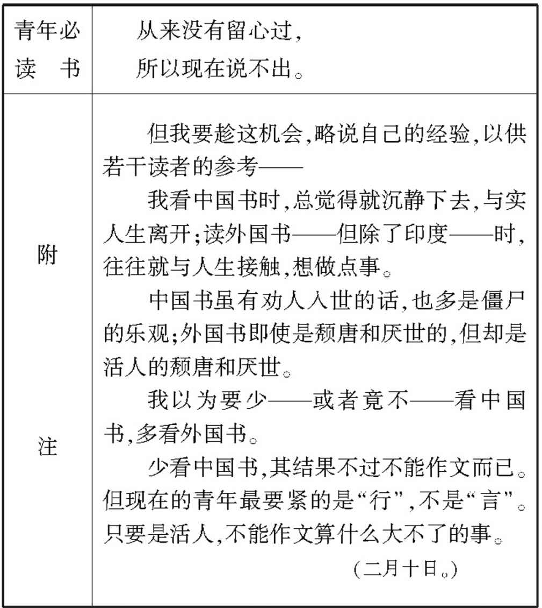

——应《京报副刊》[24]的征求

注 释
[23] 本篇最初发表于1925年2月21日《京报副刊》。
1925年1月间，《京报副刊》刊出启事，征求“青年爱读书”和“青年必读书”各十部的书目。本文是作者应约对后一项所作的答复。文章发表后，曾引起一些人的诘责和攻击。后来作者又写了《聊答“……”》、《报〈奇哉所谓……〉》等文（收入《集外集拾遗》），可参看。作者在1933年写的《答兼士》（收入《准风月谈》）中谈及本文的写作背景及主旨，亦可参看。
[24] 《京报副刊》 《京报》的一种副刊，孙伏园编辑，1924年12月创刊。《京报》，邵飘萍（振青）创办的报纸，1918年10月创刊于北京，次年8月曾被段祺瑞查封，1920年9月复刊，1926年4月被奉系军阀张作霖查封。